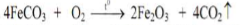
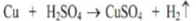
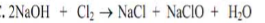
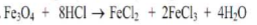
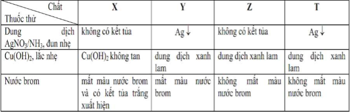
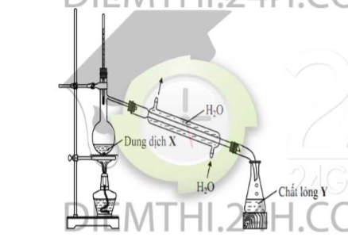
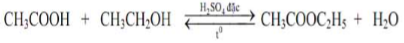
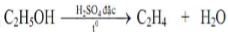
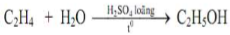
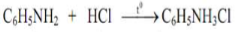

Đề môn Hóa Học số 2
Trường ĐẠI HỌC VINH - Trường THPT CHUYÊN
90
:phút
00
:giây
Ghi Chú
Cho biết nguyên tử khối của các nguyên tố: H=1; C=12; N=14; O=16; Na=23;
Mg=24; Al=27; S=32; Cl=35,5; Ca-40; Ba=137; Fe=56; Cu=64
Câu 1:
Cho 6,5 gam bột Zn vào dung dịch CuSO
4
dư, sau phản ứng hoàn toàn thu được m gam chất rắn. Giá trị của m là:
A: 3,2.
B: 12,9.
C: 5,6.
D: 6,4.
Câu 2:
Dung dịch lòng trắng trứng phản ứng với Cu(OH)
2
tạo sản phẩm có màu đặc trưng là:
A: màu tím.
B: màu đỏ máu.
C: màu xanh lam.
D: màu vàng.
Câu 3:
Số đồng phân anken đều có công thức phân tử C
4
H
8
là:
A:3.
B:5.
C:2.
D:4.
Câu 4:
Phương trình hóa học nào sau đây là
SAI
?
A:.
B:.
C:.
D:.
Câu 5:
Chất nào sau đây
KHÔNG
tan trong nước?
A: Xenlulozơ.
B: Glucozơ.
C: Fructozơ.
D: Saccarozơ
Câu 6:
Cho 7,5 gam H
2
NCH
2
COOH tác dụng vừa đủ với dung dịch HCl, thu được dung dịch chứa m gam muối. Giá trị của m là:
A: 11,15.
B: 11,05.
C: 14,80.
D: 10,57.
Câu 7:
Phá biểu nào sau đây
SAI
?
A: Axit fomic làm mất màu nước brom.
B: Phenol có lực axit lớn hơn lực axit của ancol benzylic.
C: Anđehit axetic làm mất màu dung dịch KMnO
4
.
D: Etanol hòa tan được Cu(OH)
2
tạo thành phức chất tan, màu xanh da trời.
Câu 8:
Khi làm thí nghiệm với HNO
3
đặc, nóng thường sinh ra khí NO
2
. Để hạn chế tốt nhất khí NO
2
thoát ra gây ô nhiễm môi trường, người ta nút ống nghiệm bằng bông tẩm dung dịch nào sau đây?
A: Cồn.
B: Muối ăn.
C: Giấm ăn.
D: Xút.
Câu 9:
Kim loại Al
KHÔNG
phản ứng với chất nào sau đây trong dung dịch?
A: MgCl
2
.
B: Fe
2
(SO
4
)
3
.
C: HCl.
D: CuSO
4
Câu 10:
Thực hiện các thí nghiệm sau đây ở điều kiện thường:
(a) Sục khí H
2
S vào dung dịch NaOH.
(b) Cho kim loại Ca vào nước.
(c) Sục khí Cl
2
vào dung dịch Ca(OH)
2
.
(d) Cho NH
4
Cl vào dung dịch NaOH.
(e) Cho bột Zn vào dung dịch HNO
3
.
Số thí nghiệm xảy ra phản ứng oxi hóa - khử là:
A: 4.
B: 2.
C: 3.
D: 5.
Câu 11:
Triolein
Không
tác dụng với chất (hoặc dung dịch) nào sau đây?
A: Dung dịch brom.
B: Khí H
2
(xúc tác Ni, nung nóng).
C: Dung dịch KOH (đun nóng).
D: Kim loại Na.
Câu 12:
Hợp chất nào sau đây có tính lưỡng tính?
A: Fe(OH)
2
.
B: Zn(OH)
2
.
C: Cr(OH)
2
.
D: Ba(OH)
2
.
Câu 13:
Cho 10 gam CaCO
3
vào dung dịch HCl dư, sau khi phản ứng xảy ra hoàn toàn thu được V lít CO
2
(ĐKTC). Giá trị của V là:
A: 3,36.
B: 2,80.
C: 2,24.
D: 1,12.
Câu 14:
Chất
KHÔNG
thuộc loại phenol là:
A: Catechol.
B: Hidroquinon.
C: ancol benzylic.
D: o-crezol.
Câu 15:
Nguyên liệu chính để điều chế kim loại Na trong công nghiệp là:
A: Na
2
CO
3
.
B: NaCl.
C: NaOH.
D: NaNO
3
.
Câu 16:
Số công thức cấu tạo có cùng công thức phân tử C
3
H
8
O là:
A: 3.
B: 2.
C: 1.
D: 4.
Câu 17:
Cho 4,68 gam một kim loại M vào nước dư, sau khi phản ứng xảy ra hoàn toàn thu được 1,344 lít khí H
2
(ĐKTC). Kim loại M là:
A: Ba.
B: Ca.
C: K.
D: Na.
Câu 18:
Khử hoàn toàn 4,8 gam CuO bằng CO ở nhiệt độ cao, khối lượng kim loại tạo ra sau phản ứng là:
A: 3,84 gam.
B: 2,4 gam.
C: 4,0 gam.
D: 3,2 gam.
Câu 19:
Tên thay thế của axit cacboxylic có công thức cấu tạo thu gọn CH
3
CH
2
CH
2
COOH là:
A: axit propanoic.
B: axit butanoic.
C: axit butiric.
D: axit propionic.
Câu 20:
Cấu hình electron của nguyên tử nguyên tố X (Z
X
< 20) có 6 electron lớp ngoài cùng, ở trạng thái đơn chất X không tác dụng với F
2
. Vị trí của X trong bảng tuần hoàn là:
A: Ô số 8, chu kì 2, nhóm IVA.
B: Ô số 16, chu kì 3, nhóm VIA.
C: Ô số 8, chu kì 2, nhóm VIA.
D: Ô số 14, chu kì 3, nhóm VIA.
Câu 21:
Nitơ trong chất nào sau đây vừa có tính oxi hóa vừa có tính khử?
A: NH
4
Cl.
B: NH
3
.
C: N
2
.
D: HNO
3
.
Câu 22:
Xà phòng hóa hoàn toàn 12 gam CH
2
=CHCOOC
2
H
5
bằng một lượng dung dịch NaOH vừa đủ. Cô cạn dung dịch sau phản ứng, thu được m gam muối khan. Giá trị của m là:
A: 16,32.
B: 11,52
C: 16,80.
D: 11,28.
Câu 23:
Thí ngiệm hóa học
KHÔNG
sinh ra chất khí là:
A: Cho Na
2
CO
3
vào lượng dư dung dịch H
2
SO
4
.
B: Sục khí H
2
S vào dung dịch CuSO
4
.
C: Cho kim loại Ba vào dung dịch CuSO
4
.
D: Nhiệt phân hoàn toàn KMnO
4
.
Câu 24:
Đun nóng 4,8 gam CH
3
OH với CH
3
COOH dư (xúc tác H
2
SO
4
đặc) thu được m gam CH
3
COOCH
3
. Biết hiệu suất phản ứng este hóa tính theo ancol là 60%. Giá trị của m là:
A: 6,66.
B: 18,50.
C: 7,92.
D: 11,10.
Câu 25:
Kim loại
KHÔNG
tan trong dung dịch HNO
3
đặc, nguội là:
A: Mg.
B: Al.
C: Zn.
D: Cu.
Câu 26:
Dung dịch 37-40% fomanđehit trong nước gọi là fomon được dùng đẻ ngâm xác động vật, thuộc da, tẩy uế, diệt trùng,... công thức hóa học của fomanđehit là:
A: CH
3
CHO.
B: HCHO.
C: CH
2
=CHO.
D: OHC-CHO.
Câu 27:
Đốt chảy hoàn toàn m gam S trong oxi dư, hấp thụ toàn bộ sản phẩm cháy vào 120ml dung dịch NaOH 1M thì thu được dung dịch chứa 2 muối có cùng nông độ mol. Giá trị của m là
A: 1,92.
B: 3,20.
C: 3,84.
D: 2,56.
Câu 28:
Chất nào sau đây trùng hợp tạo poli(metyl metacrylat)?
A: CH
2
=C(CH
3
)COOCH
3
.
B: CH
2
=CHCOOCH
3
.
C: CH
3
COOCH=CH
2
.
D: CH
2
=C(CH
3
)COOC
2
H
5
.
Câu 29:
Trong các kim loại sau, kim loại để bị oxi hóa nhất là
A: Ca.
B: Fe.
C: K.
D: Ag.
Câu 30:
Trong các chất sau đây, chất nào có lực bazơ mạnh nhất?
A: Đimetylamin.
B: Etylamin.
C: Metylamin.
D: Anilin.
Câu 31:
Bảng dưới đây ghi lại hiện tượng khi làm thí nghiệm với các chát X, Y, Z, T ớ dạng dung dịch với dung môi nước:

Các chất X, Y, Z, và T lần lượt là:
A: Anilin, glucozơ, glixerol, fructozơ.
B: Phenol, glucozơ, glixerol, mantozơ.
C: Anilin, mantozơ, etanol, axit acrylic.
D: Phenol, axit fomic, saccarozơ, glucozơ.
Câu 32
Cho V lít dung dịch chứa đồng thời Ba(OH)
2
1M và NaOH 0,5M vào 200 ml dung dịch H
2
SO
4
1M và HCl 1M. Sau khi các phản ứng kết thúc, thu được dung dịch có pH = 7. Giá trị của V là:
A: 0,25.
B: 0,30.
C: 0,24.
D: 0,22.
Câu 33:
Phát biểu nào sau đây
KHÔNG
đúng?
A: Để bảo quản kim loại kiềm, người ta ngâm nó chìm trong dầu hỏa.
B: Si ở thể rắn không tác dụng được với dung dịch NaOH.
C: Đám cháy Mg không thể dùng CO
2
để dập tắt.
D: Phản ứng giữa F
2
và hơi nước sinh ra O
2
.
Câu 34:
Nhờ rất từ từ đến hết 200 ml dung dịch X chứa đồng thời H
2
SO
4
aM và HCl 0,15M vào 100 ml dung dịch chứa đồng thời NaOH 0,5M và Na
2
CO
3
0,4M. Sau khi các phản ứng xảy ra hoàn toàn, thu được 0,448 lít khi (đktc).Giá trị của a là:
A: 0,4.
B: 0,1.
C: 0,3.
D: 0,2.
Câu 35:
Tiến hành các thí nghiệm sau:
(a) Cho Mg vào dung dịch Fe
2
(SO
4
)
3
dư.
(b) Sục khi H
2
S vào dung dịch FeCl
3
.
(c) Cho tinh thể NaNO
2
vào dung dịch NH
4
Cl bão hòa rối đun nóng.
(d) Cho FeS tác dung với dung dịch HCl.
(e) Đun nóng hỗn hợp gồm NaCl tinh thể và H
2
SO
4
đặc.
Số thí nghiệm
KHÔNG
sinh ra đơn chất là:
A: 2
B: 5
C: 4
D: 3
Câu 36:
Cho hỗn hợp gồm 0,1 mol Zn và 0,2 mol Mg vào 400 ml dung dịch chứa đồng thời Cu(NO
3
)
2
1M và AgNO
3
1M. Sau khi các phản ứng xảy ra hoàn toàn, thu được chất rắn X. Hòa tan hoàn toàn X trong lượng dư dung dịch HNO
3
, thu được V lít khí NO (sản phảm khử duy nhất của N
+5
, đktc). Giá trị của V là:
A: 6,72.
B: 5,60.
C: 4,48.
D: 2,24.
Câu 37:
Hòa tan hoàn toàn hỗn hợp gồm 0,03 mol Cu và 0,09 mol Mg vào dung dịch chứa 0,07 mol KNO
3
và 0,16 mol H
2
SO
4
loãng thì thu được dung dịch chỉ chứa các muối sunfat trung hòa và 1,12 lít (đktc) hỗn hợp khí X gồm các oxit của nitơ có tỉ khối so với H
2
là X. Giá trị của X là:
A: 18,2.
B: 19,6.
C: 20,1.
D: 19,5.
Câu 38:
Cho hình vẽ mô tả thí nghiệm điều chế chất lỏng Y từ dung dịch X:

Trong thí nghiệm trên, xảy ra phản ứng hóa học nào sau đây?
A: .
B: .
C: .
D: .
Câu 39:
Hỗn hợp X gồm hai chất hữu cớ mạch hở (đều chứa C, H, 0), trong phân từ mỗi chất có hai nhóm trong số các nhóm -CHO, -CH
2
OH, -COOH. Đốt cháy hoàn toàn 17,1 gam X thu được 11,2 lít CO
2
(đktc) và m gam H
2
O. Cho 17,1 gam X tác dụng hết với Na dư, thu được 2,8 lít H
2
(đktc). Mặt khác, cho 17,1 gam X phản ứng hoàn toàn với lượng dư dung dịch AgNO
3
trong NH
3
, thu được 54 gam Ag. Giá trị của m là:
A: 6,3.
B: 4,5.
C: 12,6.
D: 9,0.
Câu 40:
Đốt chảy hoàn toàn 17,6 gam hợp chất hữu cơ X mạch hở, cần dùng vừa đủ 16,8 lít khí O
2
(đktc), thu được CO
2
và H
2
O theo tỉ lệ sô mol tương ứng là 7 : 6. Biêt X có công thức phân tử trùng với công thức đơn giản nhất, X phản ứng hết với lượng dư dung dịch NaOH chỉ sinh ra một muối của axit no, mạch hở và một ancol có công thức phân tử C
3
H
7
OH. Số công thức cấu tạo của X thỏa mãn các điêu kiện trên là:
A: 2.
B: 8.
C: 3.
D: 4.
Câu 41:
Hỗn hợp M gồm 3 este đơn chức X, Y, Z (M
X
< M
Y
< M
Z
và số mol của Y bé hơn số mol của X) tạo thành từ cùng một axit cacboxylic (phân từ chỉ có nhóm -COOH) và ba ancol no (số nguyên tử C trong phân tử mỗi ancol nhỏ hơn 4). Thủy phân hoàn toàn 34,8 gam M bằng 490 ml dung dịch NaOH 1M (dư 40% so với lượng phản ứng). Cô cạn hỗn hợp sau phản ứng thu được 38,5 gam chất rắn khan. Mặt khác, nếu đốt cháy hoàn toàn 34,8 gam M trên thì thu được CO
2
và 23,4 gam H
2
0. Thành phần phần trăm theo khối lượng của Y trong M là:
A: 32,18%.
B: 43,10%.
C: 34,01%.
D: 24,12%.
Câu 42:
Hòa tan hoàn toàn m gam hỗn hợp X gồm Cu và Fe
3
O
4
(trong đó oxi chiếm 25,8% về khối lượng của X) vào dung dịch H
2
SO
4
loãng, rất dư, thu được dung dịch Y. Biết rằng 1/10 dung dịch Y làm mất màu vừa đủ 30 ml dung dịch KMnO
4
0,2M. Giá trị của m
gần giá trị nào nhất
sau đây?
A: 74,4.
B: 88,8.
C: 49,6.
D: 44,4.
Câu 43:
Có 3,94 gam hỗn hợp X gồm bột Al và Fe
3
O
4
, (trong đó Al chiếm 41,12% về khối lượng), thực hiện phản ứng nhiệt nhôm hoàn toàn hỗn hợp X trong chân không thu được hỗn hợp Y. Hòa tan hoàn toàn Y trong dung dịch chứa 0,314 mol HNO
3
thu được dung dịch Z chỉ có các muối và 0,021 mol một khí duy nhất là NO. Cô cạn dung dịch Z, rồi thu lấy chất rắn khan nung trong chân không đến khối lượng không đổi thu được hỗn hợp khí và hơi T. Khối lượng của T
gần giá trị nào nhất
sau đây?
A: 14,58 gam.
B: 45,35 gam.
C: 15,78 gam.
D: 14,15 gam.
Câu 44:
X, Y là hai axit cacboxylic no, đơn chức, mạch hở, đồng đẳng kế tiếp (M
X
< M
Y
), T là este tạo bởi X, Y với một ancol hai chức Z. Đốt cháy hoàn toàn 3,21 gam hỗn hợp M gồm X, Y, Z, T bằng lượng vừa đủ khí O
2
, thu được 2,576 lít CO
2
(đktc) và 2,07 gam H
2
O. Mặt khác 3,21 gam M phản ứng vừa đủ với 200 ml dung dịch KOH 0,2M, đun nóng. Phát biểu nào sau đây
SAI
?
A: Thành phần phần trăm theo số mol của Y trong M là 12,5%
B: Tổng số nguyên từ hiđro trong hai phân từ X, Y bằng 6.
C: Tổng số nguyên tử cacbon trong phân từ T bằng 6.
D: X không làm mất màu nước brom.
Câu 45:
Hỗn hợp X gồm C
2
H
5
OH, HCHO, CH
3
COOH, HCOOCH
3
, CH
3
COOC
2
H
5
, CH
2
OHCH(OH)CHO và CH
3
CH(OH)COOH. Đốt cháy hoàn toàn 13,8 gam X cần dùng vừa đủ 12,04 lít O
2
(đktc), thu được CO
2
và 9 gam H
2
O. Thành phần phần trăm theo khối lượng của CH
3
COOC
2
H
3
trong X là:
A: 12,46%.
B: 31,16%.
C: 24,92%.
D: 15,58%.
Câu 46:
Hỗn hợp X gồm 4 chất hữu cơ đều có cùng công thức phân từ là C
2
H
8
O
3
N
2
. Cho một lượng X phản ứng vừa đủ với V ml dung dịch NaOH 0,5M và đun nóng, thu được dung dịch Y chỉ gồm các chất vô cơ và 6,72 lít (đktc) hỗn hợp Z chỉ gồm 3 amin. Cô cạn toàn bộ dung dịch Y thu được 29,28 gam hỗn hợp muối khan. Giá trị của V là:
A: 480.
B: 420.
C: 960.
D: 840.
Câu 47:
Hỗn hợp X gồm hai ancol đồng đẳng kế tiếp.Đun m gam x với H
2
SO
4
đặc, thu được H
2
O và hỗn hợp các chát hữu cơ Y gồm hai ancol và ba ete. Đốt cháy hoàn toàn Y cần dùng vừa đủ 7,56 lít O
2
(đktc), sinh ra 5,04 lít CO
2
(đktc). Mặt khác, cho m gam X đi qua ống sứ đựng CuO (dư) nung nóng. Sau khi các phản ứng xảy ra hoàn toàn, thu được hỗn hợp Z gồm 2 chất hữu cơ và hơi nước. Cho Z tác dụng hoàn toàn với lượng dư dung dịch AgNO
3
trong NH
3
đun nóng, thu được 16,2 gam Ag. Tên thay thế cùa ancol có khối lượng mol phân từ lớn hơn trong X là
A: propan-2-ol.
B: butan-1-ol.
C: butan-2-ol.
D: propan-1-ol.
Câu 48:
Tiến hành điện phân (với điện cực trơ. hiệu suất 100%, dòng điện có cường độ không đổi dung dịch X gồm 0,2 mol CuSO
4
và 0,15 mol HCl, sau một thời gian điện phân thu được dung dịch Y có khối lượng giảm 14,125 gam so với khối lượng dung dịch X. Cho 15 gam bột Fe vào Y đến khi kết thúc các phản ứng thu được m gam chất rắn. Biết các khí sinh ra hòa tan không đáng kể trong nước. Giá trị cùa m là
A: 8,6.
B: 15,3.
C: 10,8.
D: 8,0.
Câu 49:
Cho m gam bột Fe vào bình kín chứa đồng thời 0,06 mol O
2
và 0,03 mol Cl
2
, rồi đốt nóng. Sau khi các phản ứng xảy ra hoàn toàn chỉ thu được hỗn hợp chất rắn chứa các oxit Sắt và muối sắt. Hòa tan hết hỗn hợp này trong một lượng dung dịch HCl (lấy dư 25% so với lượng cần phản ứng) thu được dung dịch X. Cho dung dịch AgNO
3
dư vào X, sau khi kết thúc các phản ứng thì thu được 53,28 gam kết tủa (biết sản phẩm khử của N
+5
là khí NO duy nhất). Giá trị của m là:
A: 6,44.
B: 6,72.
C: 5,60.
D: 5,96.
Câu 50:
Hỗn hợp X gồm tripeptit Y, tetrapeptit Z và pentapeptit T (đều mạch hở) chỉ được tạo ra từ Gly, Ala, và Val. Đốt cháy hoàn toàn m gam X, rồi cho toàn bộ sản phẩm cháy (chỉ gồm CO
2
, H
2
O và N
2
) vào bình dụng 140 ml dung dịch Ba(OH)
2
1M, sau khi các phản ứng xảy ra hoàn toàn thấy có 840 ml (đktc) một khí duy nhất thoát ra và thu được dung dịch có khối lượng tăng 11,865 gam so với khối lượng dung dịch Ba(OH)
2
ban đầu. Giá trị của m gần giá trị nào nhất sau đây?
A: 6,26.
B: 7,26.
C: 7,25.
D: 8,25.
Correct answers: